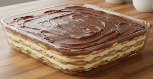

Receita de Torta de Bolacha
Receita pra fazer uma torta de bolacha gostosa, macia, e não enjoativa de forma simples,
que leva apenas 45 minutos de preparo.

Ingredientes
- 3 colheres de maisena;
- 2 ovos;
- 1 lata de leite condensado;
- 1 pacote de bolacha maria;
- 5 colheres de chocolate em pó 40%;
- 1 xícara de açucar;
- 1 lata de creme de leite;
- 1 litro de leite.
Modo de Preparo
- Misture a maisena, o açucar e o chocolate em pó em uma panela grande, e aos poucos, despeje leite para dissolver;
- Separe a gema e a clara dos ovos, despeje as gemas em uma caneca, misture, e então coloque dentro da panela;
- Por último, coloque o leite condensado e misture bem;
- Leve ao fogo e mexa de vez em quando para não queimar;
- Enquanto isso, abra o pacote de bolachas e as molhe com um pouco de leite;
- Coloque uma camada de bolachas em um travessa até que encha todo o fundo;
- Não deixe a mistura na panela engrossar tanto, quando começar a ferver abaixe o fogo e misture até ficar cremosa;
- Coloque uma camada do creme sobre as bolachas na travessa e repita o processo de creme em cima da bolacha até a panela esvaziar;;
- A última camada deve ser a do creme
- Bata as claras de ovo que foram separadas em neve, adicione 2 colheres de açucar e bata novamente;
- Por fim, adicione o creme de leite em cima da clara e bata com uma colher;
- Coloque o novo creme sobre a torta;
- Sirva gelado.
Informações Nutricionais
| Carboidratos |
10g |
| Gorduras Totais |
2,8g |
| Gorduras Saturadas |
1,3g |
| Gordura Trans |
1,5g |
Voltar pra Home